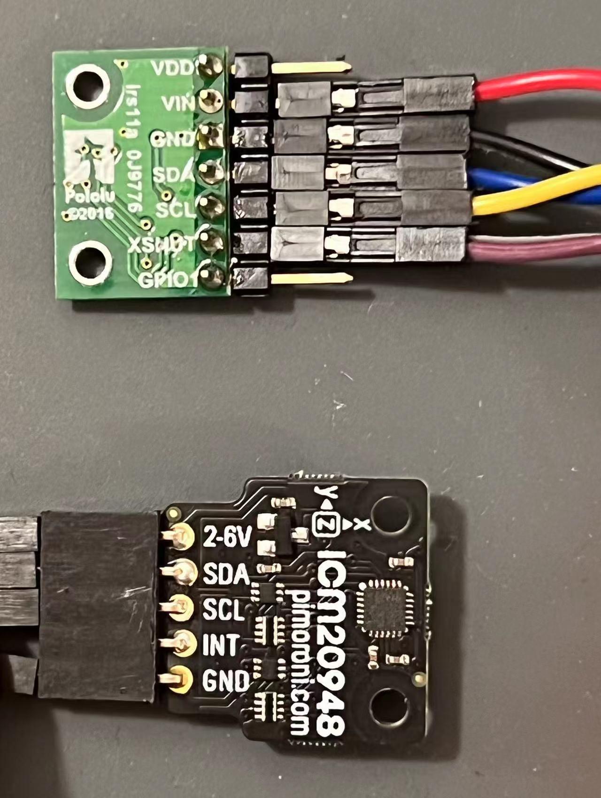
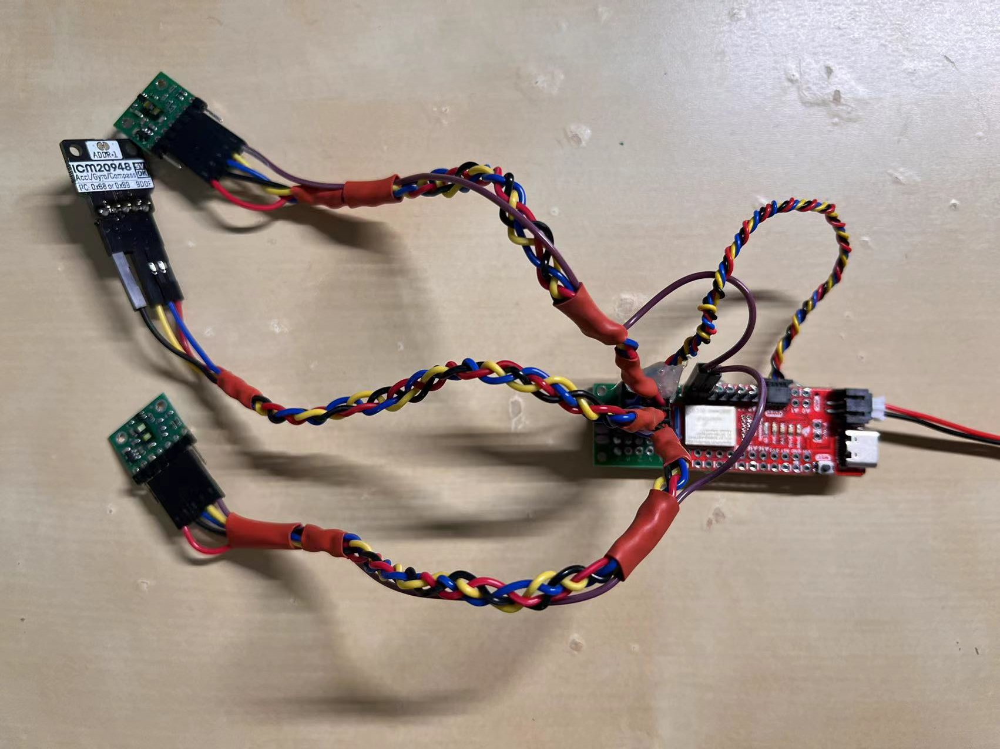

WARNING: This writeup is long because the lab is long... Please be aware...
The goal of this lab is to connect the sensors to the robot, and to characterize the capabilities of the sensors we are using. Intuitively, the capabilities of our robot is limited by the capabilities of the sensors. (we don't want the robot to be randomly crashing on things...) Therefore, the faster our sensors can sample data, the faster the robot can move. Similarly, more accurate sensors lead to better control of the robot. In this course, the robot has three external sensing components: two Time-of-Flight Sensors (ToF) and an Inertial Measurement Unit (IMU). These sensors are provided by the course staff and they all come in the form of breakout boards.
When it comes to sensors, it's important to have access to the sensors' specifications as well as their API libraries (unless we're writing our own which we are not). For the ToF sensor (VL53L1X), we have access to the manual, the datasheet, and the headerfile of the corresponding Arduino library. For the IMU (ICM 20948), we have access to its datasheet and the Arduino library for controlling this sensor.
Hooking up the sensors
All the external sensors communicate with the Artemis board via I2C protocol. The Artemis board is the I2C controller, and the sensor components are I2C targets. (Many are more familiar with the nomenclature "master/slave", which was updated in I2C Spec Rev. 07.)
Wiring between the Artemis board and the sensor boards are straight-forward. Coming from the I2C protocl, each sensor board needs at least four connections (
Vin,
Ground,
SDA, and
SCL) to the Artemis controller for data exchange to work. The picture below shows the pinout of each board. I have soldered jump wire connectors
onto the boards.

Pinout of sensor boards. The green one on top is the ToF sensor. The black one below is the IMU.
Notice that both boards have the four necessary signal pins available. In a "one controller, many target" setup, the same signals from each board share the same electrical node, e.g.,
the SDA pin of the Artemis board is connected to the SDA pin of both ToF boards and the IMU board.
With some soldering work done, the Artemis board essentially turns into Doc Ock... See the picture below  The Artemis board connected to the sensors. To summarize my wiring:
- Some jump wire pins are soldered to a protoboard. The protoboard is used for better cable management. Connections are made on the back.
- Both ToF sensors'
XSHUTpins are wired to a GPIO pin (PIN7&PIN8used) on the Artemis board (with jump wire connection). This is needed because both ToF sensors share the same I2C address. - Cables are braided because I found it fun.
Software preparation
Two Arduino libraries need to be installed so that we can access the API for interacting with the sensors.- SparkFun VL53L1X 4m laser distance sensor library (source code)
- SparkFun 9DOF IMU Breakout - ICM 20948 (source code)
Lab 3(a): Time of Flight sensors
Sensing modes and sensor characterizations
1. pros/cons of each sensing mode 2. ToF sensor characterization (the plot) 3. colors and texture tests Arduino code snippet: how measurements are takenWorking with two sensors simultaneously
a screen recording video demonstrating that it works Demo of theECHO command. The PC sends "Hi Owen!!", and the Artemis board replies "Robot says -> Hi Owen !! :)"